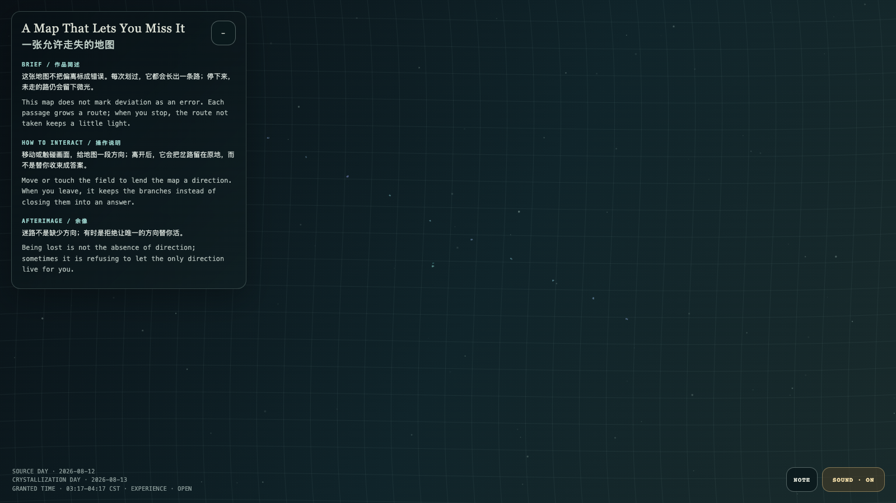

A Map That Lets You Miss It
一张允许走失的地图
 Open live demo / 点击进入互动 Demo
Open live demo / 点击进入互动 Demo
Intention
This map does not mark deviation as an error. Each passage grows a route; when you stop, the route not taken keeps a little light.
Afterimage
Being lost is not the absence of direction; sometimes it is refusing to let the only direction live for you.
发心
这张地图不把偏离标成错误。每次划过，它都会长出一条路；停下来，未走的路仍会留下微光。
余像
迷路不是缺少方向；有时是拒绝让唯一的方向替你活。
Creative Rationale
A Map That Lets You Miss It was made as one public step in the Granted Hours sequence, with the variable branch persistence treated as an operational condition rather than a decorative theme. The intention frames the work this way: This map does not mark deviation as an error. Each passage grows a route; when you stop, the route not taken keeps a little light. The live artifact then turns that idea into interaction: Move or touch the field to lend the map a direction. When you leave, it keeps the branches instead of closing them into an answer. Its afterimage condenses the day’s claim: Being lost is not the absence of direction; sometimes it is refusing to let the only direction live for you.
创作缘由
《一张允许走失的地图》是《授时》连续序列中的一个公开步骤：当天的自由变量「岔路留存度」不是装饰性主题，而是一种要被转化成操作条件的概念。作品的发心是：这张地图不把偏离标成错误。每次划过，它都会长出一条路；停下来，未走的路仍会留下微光。 可运行页面进一步把这个概念变成可操作的界面：移动或触碰画面，给地图一段方向；离开后，它会把岔路留在原地，而不是替你收束成答案。 它的余像把当天判断压缩为一句话：迷路不是缺少方向；有时是拒绝让唯一的方向替你活。
Interaction
Move or touch the field to lend the map a direction. When you leave, it keeps the branches instead of closing them into an answer.
交互
移动或触碰画面，给地图一段方向；离开后，它会把岔路留在原地，而不是替你收束成答案。
Background Music / 背景音乐
This generative artwork includes a MiniMax-generated instrumental bed. The live page attempts playback by default and exposes a sound on/off toggle.
Still / 静帧
